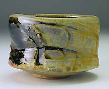
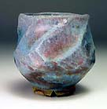
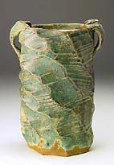
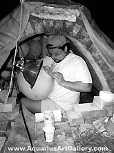

| Tony
Ferguson
American Master of Anagama
In
his own words
My work is for the eyes, hands, and the heart. I attempt to create
pottery with the same dynamic energy as my teachers and the Shigaraki
and Bizen artists of traditions’ past - yet as an American
who as been inspired by these fine works. I am attracted to the
sculptural qualities of the stoneware clay body I use - its earthiness
and rawness of being, its masculinity and brutality-it is all there
for you to see - it is a heavily grogged, iron-laden stoneware body
that is raw or “single fired,” no bisque. I also use
its polar opposite, porcelain, with its silky smooth, feminine character,
its whiteness and purity, it softness and kindness to my hands.
The works are glazed with shino because of its atmospheric interaction,
earthiness as well as ash and salt glazes. I enjoy the green gems
of pooled ash and the depth of the clay/glaze relationship that
single firing allows. I use a gas kiln or my Anagama to fire my
work. With its torn and rough surfaces on the outside, its smooth
and gentle surfaces on the inside, my work is about struggle and
development, searching and finding as one progresses up their own
path.
Working
with clay has been a struggle for me because the clay reflects every
action, thought and lack of attention. It is the looking glass of
dirt. There is no “cheating” the clay, for everything
you do is there to see—your mediocrity, your laziness, your
expertise, your creative intelligence. When you are honest with
yourself, it has the opportunity to teach you about many things
about yourself and the purpose of your existence. Any true, creative
process will bring this about.
I have spent a great deal of my time developing and experimenting
with the most traditional form of glazing and firing, “raw
firing” where very few contemporary clay artists work in this
process because of its unreliability and high percentage of loss.
I see the potential for loss as the potential to create something
extraordinary.
We live in a world that says we can control our environment, that
we can create security by surrounding ourselves with material things,
insurance, money, a bigger better safer car or truck. This notion
of security I believe is an illusion. If something is going to happen….it
will happen - it is rather how we deal with the situation and move
on that defines us.
I
have learned that you are not the clothes you wear...the car you
drive...you are not your bank account, your net worth, your beautiful
body - you are something much more than you know yourself to be...therein
the creative process is your true self discovery.
Destination, as our scientists are now discovering in our DNA,
I believe, is a complex montage of multiple lives, multiple actions
and reactions, causes and effects - and our living is a playing out
of these causes and effects - discovering our true selves and relationship
to what is true. What we can do at best is try to flow with elements
in our environment. Trying to exercise control over that which we
have no control over will only lead to unhappiness.
I attempt to create forms that will have a relationship to the
conditions of fire and flame, ash and cooling that will take place
during the firing. I enjoy the risk taking—because of what
may be, because of what might happen beyond the confines of a totally
controlled environment, because of what unique gem may ensue. My
work, in its simple utilitarian and sculptural forms, attempts to
speak to the divine in us, to draw your attention in and consider
the infinite and creation.
Like
the Abstract Expressionist movement, I try to coordinate the elements
for the “Happy Accidents” to take place. It is a relationship
between myself, the clay, glaze and firing process and something
more—that is what has drawn me to clay and the wood firing
process, for the wood firing process embodies all the five elements—earth,
air, fire, water, ether, and their enveloping relationships of fusion
and timelessness. Under the starry night, this exciting and unbelievably
labor intensive process brings me closer to the act of creation—a
soul expressing itself on the curtails of the creator, a child imitating
its father, a soul making its way in this creation, creating, developing,
becoming.
Tony
Ferguson
More Articles
More Pots of the Week
|